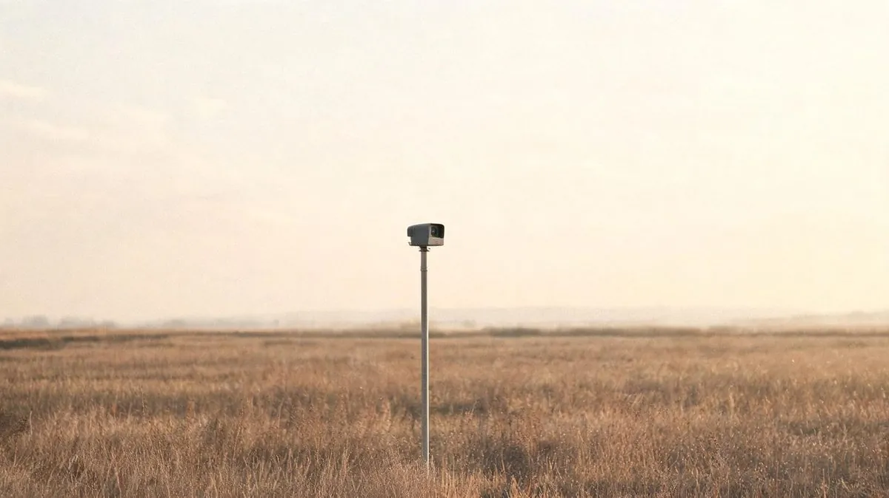

Crash Detector

Most crashes come with a short warning that a driver cannot use: low visibility, a vehicle already past the point of control, a roll about to happen. The system watches three things at once — a camera model on dashcam frames for obstacles and lane departure; a sensor model on accelerometer, gyroscope and speed for dynamics the camera cannot see, especially in the dark; and an actuator model on the steering, braking and throttle combination for control inputs that are themselves unsafe. When risk is high, a stabiliser takes over the actuators — PID to begin with, model-predictive control as the goal.
The repository holds the architecture, the metrics the project is judged by, and the roadmap. Several components are still marked to-do; it is a project in motion, not a result.
Field notes
1Dated entries from the work as it happened.
Metrics
2What was measured, and what it came to.
Artefacts
1Repositories, write-ups and demos.
Skills
5Computer Vision · IMU · Control · PID
3 signals
camera · IMU · actuators
PID → MPC
stabiliser roadmap